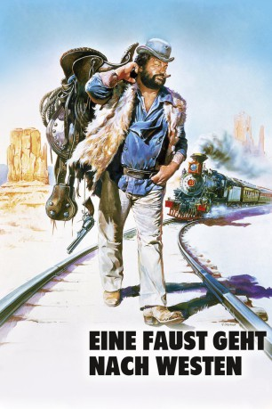
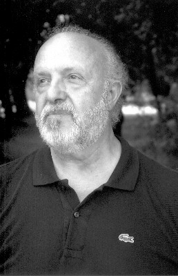
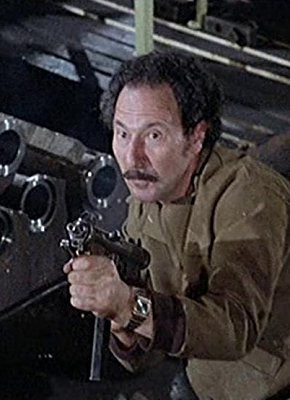

#4387 Eine Faust geht nach Westen
 
 IMDB-Wertung: 6.6 / 10
IMDB-Wertung: 6.6 / 10  Metascore: 0
Metascore: 0 
Der schwergewichtige Bud und sein Freund “Donnernder Adler” sind ein mit allen Wassern gewaschenes Gaunerduo. Eines Tages ergattern die beiden eine vielversprechende Reisetasche und machen sich mit ihrem “Fund” prompt aus dem Staub. Sie landen in Yucca, einem trostlosen Nest am Ende des Wilden Westens. Ihre Ankunft sorgt für große Aufregung: Gehören die zwei Fremden zur gefürchteten Bande von Colorado-Slim? Nein, die Tasche ist der Beweis: Das ist der neue Doktor mit seinem Gehilfen! Bald stehen die Patienten Schlange, um sich die sensationellen Radikalkuren des Wunderdoktors verschreiben zu lassen. Aber Sheriff Bronson traut dem “Doktor” nicht über den Weg, und auch Colorado-Slim und seine Bande würden die beiden merkwürdigen Medizinmänner gerne wieder loswerden.
Jahr: 1981
Dauer: 91 Minuten
FSK: 6
Land: Studio: Paramount Home EntertainmentTonspuren:
Untertitel: Deutsch,
Auflösung: 1080p (1920x800) Größe: 7505 MB
Genre: Komödie, Western
Regisseur: Michele Lupo
Drehbuch: Margery Sharp
Soundtrack:
Darsteller:
 Bud Spencer als Buddy
Bud Spencer als Buddy-  Renato Scarpa als Logan
 Amidou als Girolamo / Eagle Eye
Amidou als Girolamo / Eagle Eye- Joe Bugner als Sheriff Bronson
- Piero Trombetta als Popsy Logan
- Carlo Reali als Sarto
- Sara Franchetti als Widow Gordon
- Riccardo Pizzuti als Colorado Sim
- Andrea Heuer als Romy Gordon
- Marilda Donà als Mrs. Robinson
- Pino Patti als Mr. Robinson
- Francesco Anniballi als Kitchen Helper , uncredited
 Salvatore Basile als Cavalry Official , uncredited
Salvatore Basile als Cavalry Official , uncredited- Angelo Boscariol als Guest in Bath , uncredited
- Rossana Canghiari als Guest on Train , uncredited
- Tony Casale als Saloon Guest , uncredited
- Mario Castaldi als Guest on Train , uncredited
- Giovanni Cianfriglia als Jack Bold , uncredited
- Massimo Ciprari als Billard Player , uncredited
- Katja Daum als Waitress , uncredited
- Miguel del Castillo als Waiter on Train , uncredited
- Arnaldo Dell'Acqua als Slim Henchman , uncredited
 Ottaviano Dell'Acqua als Slim Henchman , uncredited
Ottaviano Dell'Acqua als Slim Henchman , uncredited- Roberto Dell'Acqua als Waiter , uncredited
- Bruno Di Luia als Saloon Cowboy , uncredited
- Lionello Pio Di Savoia als Cowboy on Train , uncredited
- Luca di Silverio als Boy on the Coach , uncredited
- Tom Felleghy als Doctor on Train , uncredited
- Lorenzo Fineschi als Slim Henchman , uncredited
 Lina Franchi als Waitress , uncredited
Lina Franchi als Waitress , uncredited- Jesús Guzmán als Cavalry Official , uncredited
- Barbara Herrera als Agnes - Old Woman on Train , uncredited
- Margherita Horowitz als Guest on Train , uncredited
- Ettore Martini als Guest on Train , uncredited
 Fulvio Mingozzi als Saloon Owner , uncredited
Fulvio Mingozzi als Saloon Owner , uncredited- Cesare Nizzica als Everett - Old Man on Train , uncredited
- Frank Nuyen als Cook , uncredited
- Benito Pacifico als Slim Henchman , uncredited
- Gennarino Pappagalli als Man Leaving Saloon , uncredited
- Anna Maria Perego als Guest on Train , uncredited
- Filippo Perego als Guest on Train , uncredited
- Osiride Pevarello als Lavoratory Worker , uncredited
-  Renzo Pevarello als Waiter , uncredited
 Romano Puppo als Slim Henchman , uncredited
Romano Puppo als Slim Henchman , uncredited- Angelo Ragusa als Slim Henchman , uncredited
- Teresa Rossi Passante als Guest on Train , uncredited
- Settimo Scacco als Billard Player , uncredited
- Sergio Smacchi als Slim Henchman , uncredited
- Lanfranco Spinola als Man on Train , uncredited
- Marco Stefanelli als Slim Henchman , uncredited
Datei: X:\Person\Bud Spencer + Terence Hill\Faust geht nach Westen, Eine (1981, FSK6, 1920x800).mkv seit 13.09.2016
Festplatte: HD Collection-7+mehr(A-Z)+Person
 Es gibt insgesamt 43 Filme in der Gruppe 'Person\Bud Spencer + Terence Hill'
Es gibt insgesamt 43 Filme in der Gruppe 'Person\Bud Spencer + Terence Hill'